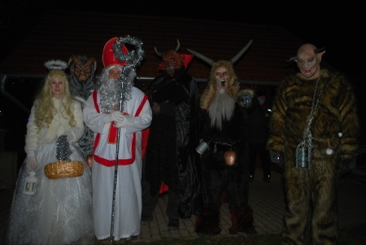

Na této stránce budou postupně zveřejňovány události ze života obce, které se udály po roce 2008. V době prohlížení stránky jsou zveřejněny 2 předcházející roky.
Další roky zpětně do roku 2008 jsou uloženy u sekretáře Osadního výboru.
ROK 2020
Pro aktuální informace použijte facebook - Kololeč-vesnička pod hradem Košťálov.
https://www.facebook.com/groups/2834464033503829
ROK 2019
Vánoce v
Kololeči
O štědrý den jsme se společně sešli na návsi a
schovaní pod pergolou před studeným deštěm, zazpívali štědrovečerní koledy. Naše hudební rodina
Dráhovi opět každému vytiskla zpěvník a krásně ke zpěvu zahrála. Moc děkujeme!
Tak krásné vánoce a Nový rok :-)
pár fotek zde: https://kololec.rajce.idnes.cz/2019.12.24.vanoce/
Mikuláš v
Kololeči
Blíží se vánoční čas a tak jsme 6.prosince společně
na návsi rozsvítili krásný vánoční strom. Chvilku na to přišel do vsi Mikuláš s andělem a svojí
čertovskou cházkou. Některé děti projevili velkou statečnost a přednesli Mikulášovi básničku,
aby pak dostaly odměnu.
Fotky opět zde: https://kololec.rajce.idnes.cz/2019.12.06.mikulas/

Podzimní turnaj v pinpongu
Náš pipongový gugu Tonda
Remetančík opět vyhlásil pinpingové klání na návsi, tentokrát 21.9. V kategorii dětí stále nemáme
žádné závodníky a tak soutěžila pouze kategorie dospělích, kde se utkalo osm závodníků. Po krutých
bojích nakonec s těsným náskokem zvítězil Anton Remetančík. Gratulujeme!
Fotky opět na rajčeti.
Rozloučení s létem
Po uplynutí letních
prázdnin, jsem se 7.září sešli pod pergolou na návsi. Bylo to také přátelské sousedské popovídání u
VYNIKAJÍCÍHO guláše, který připravil Olda Jaroš. Po několika pivech a lahvince slivovice nám bylo
krásně teplo a veselo. Moc příjemná akce :-) Děkujeme všem co pomáhali s přípravou!
Dětský den v Kololeči
V červnu jsme tradičně
věnovali našim dětem a uspořádali jim na návsi odpoledne plné soutěží.
Foto opět na https://kololec.rajce.idnes.cz/
Oslava
velikonoc
Na nedělní zmrtvíchvstání se kololečské ženy a děti
sešli na návsi a tvořili velikonoční ozdoby, kterými poté vyzdobili náves.
O velikonoční pondělí
proudili vsí skupinky koledníků a vyhodovali spousu dobrot, až koše přetékali.
Zde jsou fotky:
https://kololec.rajce.idnes.cz/2019.04.21._Vitani_jara_a_Velikonocni_pomlazka
https://kololec.rajce.idnes.cz/Velikonoce_v_Kololeci_2019
Mezinárodní den žen
8. březa jsme našim milým ženám předali kytičku pro
radost.
Foto na
Rajčeti.
https://kololec.rajce.idnes.cz/2019.03.08.MDZ/
ROK 2018
Silvestrovský ohňostroj 31.
prosince
Všem
obyvatelům naší Kololeče, jen štěstí a zdraví do Nového roku 2019.
Foto na
Rajčeti.
Vánoční zpívání 24. prosince
Moc děkujeme za krásnou atmosféru a hlavně
Drašnarovým za hudební doprovod a výtečný zpěv.
Foto na Rajčeti.
Podzimní
brigáda
3.
listopadu v dopoledních hodinách jsme se sešli v hojném počtu 18 dospělých a spousty malých
pomocníků, abychom poklidili střed naší obce před nadcházející zimou. Všem, kteří přiložili ruku k
dílu moc děkujeme za pomoc.
Fotografie z této akce
naleznete na Rajčeti
Stavba nového domu v
Kololeči
V měsíci
záři byla zahájena stavba nového domu na konci obce za závorou.Stavba pokračuje velice rychle což
dokládá fotografie z 19. října.
Foto na
Rajčeti.
Těšíme se na nové spoluobčany
Podzimní turnaj ve stolním tenisu
V sobotu
29. září se konal turnaj ve stolním tenisu o Putovní pohár starostky města
Třebenice.
V
kategorii mládeže to měl být již 5. ročník. Protože všichni postoupili do vyšší kategorie, se turnaj
nekonal. Předpokládáme, že v průběhu 4 až 5 let doroste značná část dětí, kteří se zařadí do
kategorie mládeže.
V
kategorii dospělých se soutěžilo o putovní pohár už v 6. ročníku. Turnaje se zúčastnilo 6
hráčů.
Vítězem se
stal Ing. Anton Remetančík.
Další pořadí:
2.
místo Petr Jeřábek
3.
místo Jiří Martinec
4.
místo Monika Martincová
5.
místo Stanislav Švanda
6.
místo Martin Řeháček (host).
Věcné ceny pro účastníky turnaje poskytlo město Třebenice. A také rodinná
forma Sport Spin s.r.o., Praha, která se plně věnuje nabídce a prodeji nejširšího sortimentu potřeb
pro stolní tenis.
Fotografie uloženy zde
Posezení pod altánem na téma "Vysmáté vesnické léto"
- 1. ročník 25. srpna
2018
Fotografie uloženy zde
Radostná událost
Dne 25. července 2018 v 04:21 hodin se v
Litoměřické nemocnici narodila rodičům Dianě Zídkové a Vojtěchovi Belzovi
dcera Emmička Zídková. Váha 3440 g a 50 cm.
Tatínku a maminko,
přišlo na svět
miminko,
ať je krásné, ať je
zdravé,
ať má brzy vlasy plavé,
přejeme mu jen to nej,
ať
má život báječnej.
Dětský den
5.července
Fotografie uloženy zde
Jarní turnaj ve stolním
tenisu
se
uskutečnil v sobotu 2. června. V kategorii mládeže byl jen jeden zástupce. Jeho účast byla alespoň
odměněna dárkem. Bohužel většina dětí postoupila do vyšší kategorie, a tak budeme čekat 3 až 4 roky,
než nám další děti dorostou mezi žáky.
V kategorii dospělých nastoupilo 8 hráčů. Vítězem turnaje se stal Jiří Martinec. Druhé místo
vybojoval Petr Jeřábek a třetí
místo Monika Martincová. Každý
účastník byl odměněn malým dárkem.
Fotografie uloženy
zde
Jarní
brigáda
V sobotu
28. dubna občané Kololeče se sešli na jarním úklidu naší návsi.
Fotografie uloženy
zde
Velikonoční
pomlázka
Letošní
velikonoční hodování se vydařilo. Hodovníkům svítilo sluníčko a za omlazení místních děvčat a žen,
si odnášeli bohatou výslužku.
Další fotografie naleznete zde.
MDŽ
V předvečer Mezinárodního dne žen obdržely kololečské ženy květinu a sladký
dárek.
Několik fotografií
zde.
Pingpongový turnaj v Třebenicích
První
akci, které se zúčastnili zástupci naší obce, byl turnaj ve stolním tenisu. Turnaj
pořádala Sportovní komise města Třebenice v sobotu 3.
února 2018, v místní sportovní hale. Umístění našich hráčů:
§ v kategorii
mládeže
na 3. místě Stanislav Švanda (12
účastníků)
§ v kategorii žen
na 2. místě Monika Martincová (6 účastnic)
§ v kategorii mužů
na 12. místě Jiří Martinec, na 14. místě Anton Remetančík a na 17. místě Petr Jeřábek (22 účastníků)
{kind=link}
{kind=link}
{kind=link}
{kind=link}
{kind=link}
{kind=link}
{kind=link}
{kind=link}
{kind=link}
{kind=link}
{kind=link}
{kind=link}
{kind=link}
{kind=link}
{kind=link}
{kind=link}
{kind=link}
{kind=link}
{kind=link}
{kind=link}
{kind=link}
{kind=link}
{kind=link}
{kind=link}
{kind=link}
{kind=link}
{kind=link}
{kind=link}
{kind=link}
{kind=link}
{kind=link}
{kind=link}
{kind=link}
{kind=link}
{kind=link}
{kind=link}
{kind=link}
{kind=link}
{kind=link}
{kind=link}
{kind=link}
{kind=link}
{kind=link}
{kind=link}
{kind=link}
{kind=link}
{kind=link}
{kind=link}
{kind=link}
{kind=link}
{kind=link}
{kind=link}
{kind=link}
{kind=link}
{kind=link}
{kind=link}
{kind=link}
{kind=link}
{kind=link}
{kind=link}
{kind=link}
{kind=link}
{kind=link}
{kind=link}